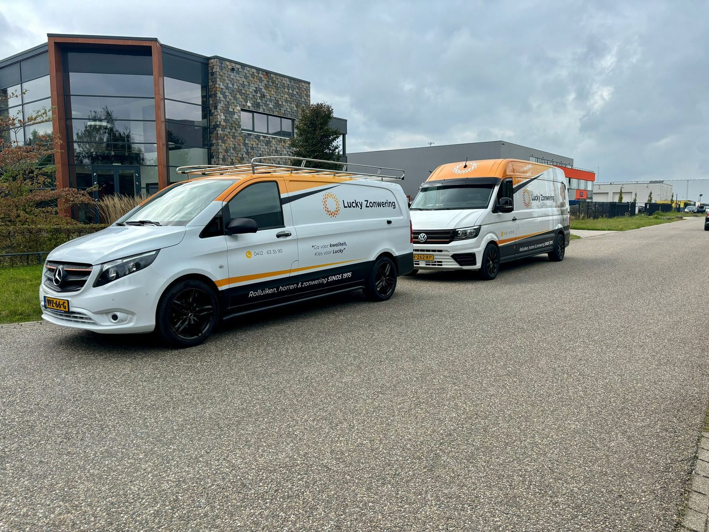

Eigen productie, eigen monteurs en eerlijk advies aan huis — al bijna 50 jaar de vertrouwde keuze in Oss en heel Brabant.

In een markt vol webshops die u een pakket sturen en u zelf laten klussen, doet Lucky het anders. Bij ons krijgt u persoonlijk advies, maatwerk én vakkundige montage. Dit zijn de redenen waarom klanten in heel Noord-Brabant voor Lucky Zonwering kiezen.
Onze rolluiken komen uit onze eigen werkplaats in Oss. Op maat, met de hand getest, en daardoor scherp geprijsd met een korte levertijd.
Geen onderaannemers: onze eigen vakmensen plaatsen alles netjes en veilig, en laten uw woning schoon achter. Strak werk met goede nazorg.
Wij komen gratis en vrijblijvend inmeten en denken eerlijk met u mee over kleur, bediening (handmatig, elektrisch of Somfy) en het juiste type zonwering.
Wij werken met topmerken als Somfy, Luxaflex, Verano en Brustor, naast rolluiken uit eigen productie — kwaliteit die jaren meegaat.
Iets kapot? Dankzij onze eigen voorraad helpen we u snel — ook aan zonwering van andere merken.
Dagelijks actief in Eindhoven, Tilburg, Breda, Den Bosch, Waalwijk, Oss en Uden. Kort op de bal, met persoonlijk contact.